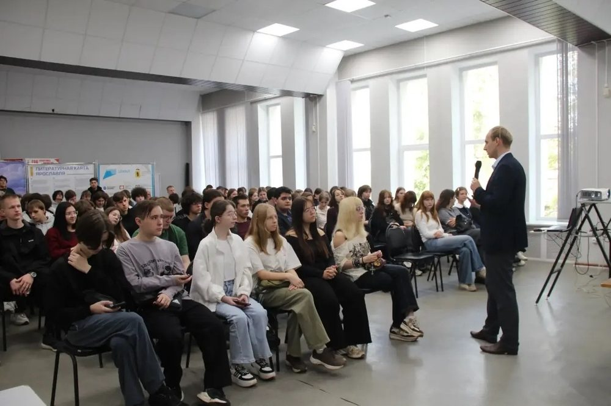
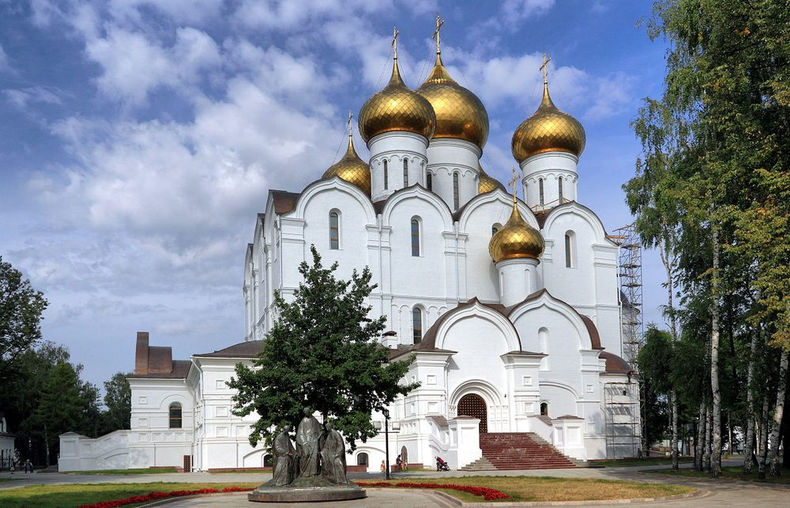
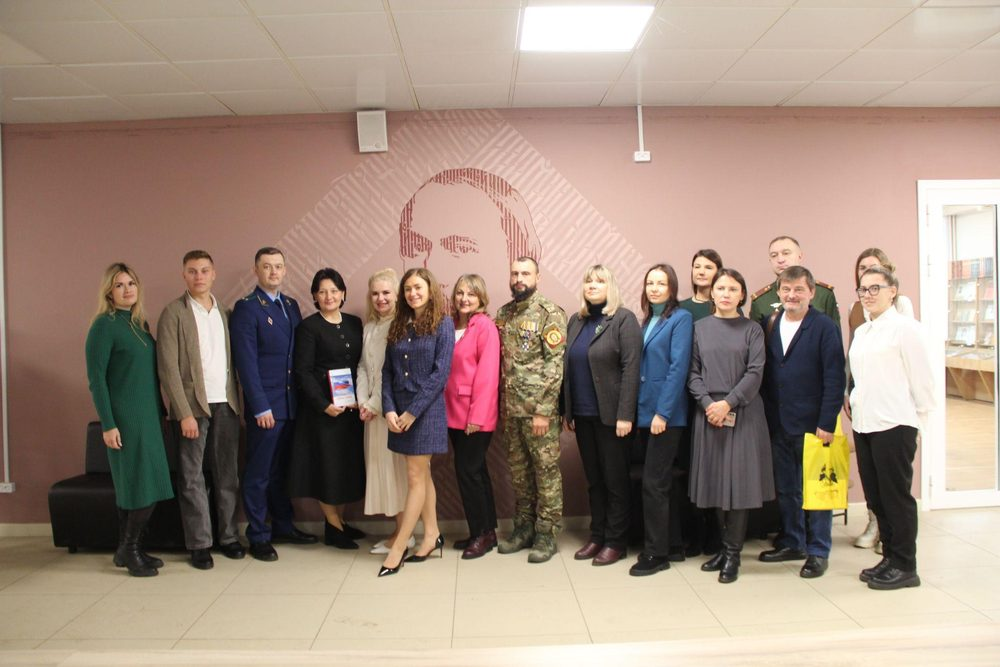

Деятельность
Ярославское региональное отделение Международной общественной организации «Императорское Православное Палестинское Общество» (ИППО) осуществляет свою работу на основе многовековых традиций, заложенных более столетия назад. Мы видим свою главную задачу в возрождении и продолжении великого дела просвещения, науки и милосердия, а также в активном развитии социокультурной и гуманитарной деятельности на благо жителей региона.
Наша миссия и ценности
В современном мире Ярославское отделение ИППО строит свою деятельность, опираясь на три незыблемых ценностных ориентира:
- Милосердие — деятельное сострадание, искреннее внимание к человеку и готовность оказывать помощь в самых сложных и социально значимых сферах.
- Служение Отечеству и ближним — добровольный и честный труд на благо духовного, культурного и социального развития Ярославского региона.
- Хранение исторической памяти — глубокое уважение к духовному, государственному и культурному наследию России, а также его защита и популяризация среди поколений.
Направления работы
1. Научно-исследовательская, историко-краеведческая и просветительская деятельность

- Исторические исследования: Изучение летописи Ярославского отделения ИППО, архивные изыскания по фактам пребывания членов Императорского Дома Романовых на Ярославской земле, а также исследование исторических связей края со Святой Землей.
- Сохранение наследия: Экспертное и общественное содействие в вопросах реставрации, поддержания и защиты памятников православной культуры и архитектуры региона.
- Просветительские проекты: Проведение на безвозмездных базах учреждений культуры, образования и архивов научно-практических конференций, выставок и открытых просветительских лекций для студенческой молодежи.
- Регулярные дискуссионные площадки: Организация и проведение знаковых экспертных и общественных форумов:
- Ежегодный круглый стол «Ярославский хронограф: диалог поколений. Ежегодный круглый стол по сохранению исторической памяти и духовно-нравственному воспитанию в библиотеках, музеях, архивах, учебных заведениях».
- Круглый стол «Обсуждение и разработка системы мер по социально-психологической адаптации ветеранов боевых действий».
2. Развитие православного паломничества

Направление призвано развивать внутренний религиозный туризм и интегрировать Ярославскую митрополию в общероссийские маршруты.
- Региональные маршруты: Разработка и проведение паломнических и экскурсионно-просветительских поездок для жителей Ярославской области к главным святыням края.
- Межрегиональное сотрудничество: Координация и организационно-методическое сопровождение паломнических групп, прибывающих в регион.
3. Гуманитарно-благотворительное служение

Деятельность отделения в социальной сфере направлена на возрождение исторических традиций христианского сострадания и милосердия через развитие механизмов общественного партнерства и координацию волонтерских инициатив.
- Адресная поддержка: Разработка и постепенное внедрение системных благотворительных программ, социальных проектов и гуманитарных миссий, нацеленных на оказание необходимой помощи и духовной поддержки нуждающимся категориям граждан, а также профильным социальным учреждениям Ярославской области.